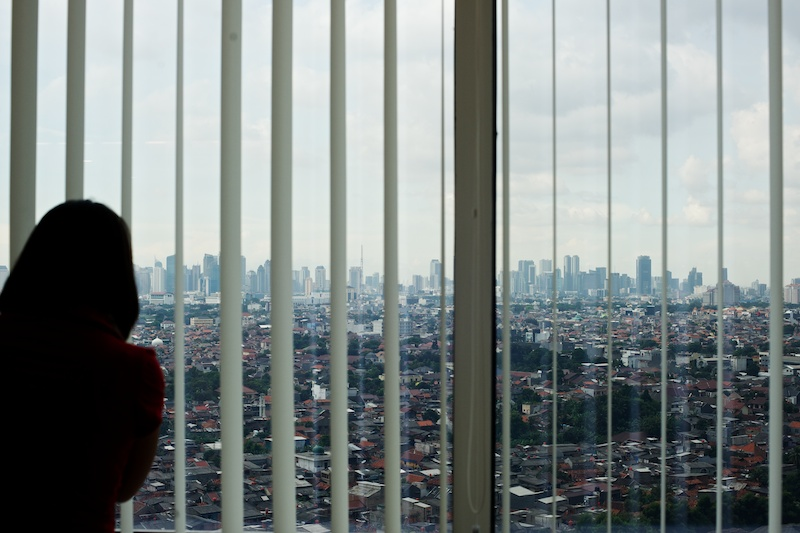
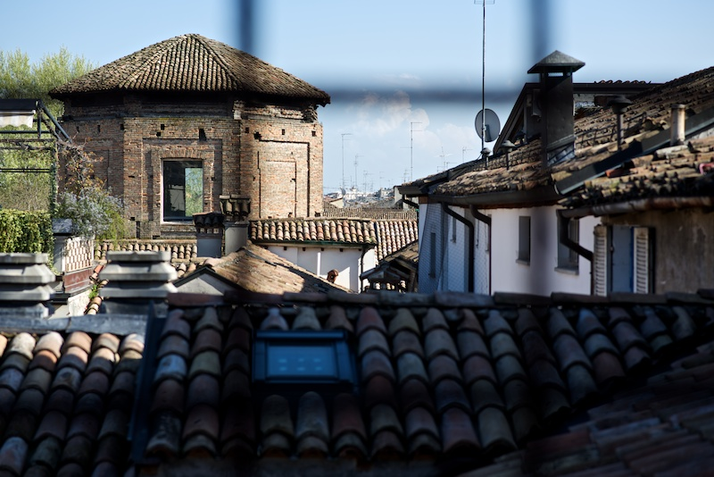
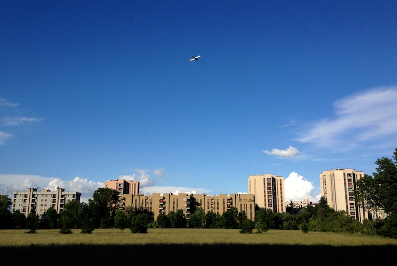

A settembre 2013 ho fatto una presentazione delle mie foto al circolo fotografico di San Donato. Ero parte del circolo da un anno, e mi pareva una cosa da fare sia per contribuire alla vita del circolo, sia per mettere alla prova del pubblico alcune delle mie foto. L’obiettivo era di raccontare brevemente da dove venissi, fotograficamente parlando, e mostrare alcune delle foto più care o dotate di una qualche qualità che potesse essere apprezzata anche da altri. Non ho fatto una presentazione appariscente, non c’erano effetti o transizioni speciali né una colonna sonora; ci ho parlato su, cercando di collegare con una narrativa i gruppi di foto che avevo scelto. Anche se difficile riportare per scritto quella che avevo pensato come esposizione orale, ci provo, anche per fermare nel tempo il mio primo ‘outing’ fotografico.
Ho diviso in due parti questo post. La seconda parte si trova qui: Presentazione Circolo Fotografico, parte 2.
origini
Ho iniziato a fare fotografie quando c’era ancora la pellicola, ma dico subito che sono ben contento che sia arrivato il digitale!
Ultimamente ho notato che, se da un lato si constata il definitivo tracollo dal punto di vista commerciale della pellicola, dall’altro ci sono alcuni appassionati, artisti e nostalgici che parlano con insistenza di un rinascimento della pellicola.
Ora, la mia idea è che la pellicola venga osannata solo da chi non ha mai affrontato le pene dell’analogico: l’attesa prima di vedere i risultati, la delusione per interi rullini buttati via per essersi dimenticati di settare gli ISO corretti, il costo stesso di ogni singola fotografia.
Dicono i nuovi santoni: usate la pellicola perché insegna il rigore, l’intenzionalità, il rifiuto di affidarsi alla raffica per cogliere una buona immagine (gli americani dicono “spray and pray”). Ok, tutto corretto in linea di primcipio, io stesso sono un gran fautore dell’intenzionalità dello scatto; ma questa è disciplina mentale che chiunque si può imporre — non c’è bisogno di una Yashica FX3 con rullino di Velvia per ragionare prima di scattare.

Londra (Tate Modern): Marsyas di Anish Kapoor, Nikon F70, 50mm f/1.8, Kodak Tri-X 400.
Sono relativamente pochi i rullini che ho scansionato; ancora di meno le foto che davvero mi soddisfano. E quelle che ho selezionato hanno tutte un certo valore affettivo, perché mi ricordano ad esempio quella sensazione di aver ripreso esattamente quello che avevo in mente.

Caldarroste, Roma, Nikon F70, 50mm f/1.8, Kodak Tri-X 400.

Londra: Lloyds building, Nikon F70, 50mm f/1.8, Kodak Tri-X 400.
Quindi probabilmente il mio giudizio su queste prime foto è meno asettico di come dovrebbe essere. Per scongiurare questo rischio: poche foto.

Mendrisio: concerto US3, Nikon F70, 50mm f/1.8, Kodak Tri-X 400.
digitale/bianconero
Il bianconero è un buon punto di collegamento tra analogico e digitale. Non sono un gran fanatico del bianconero; il mio pensiero molto terra-terra è questo; la natura è piena di colore, abbiamo strumenti in grado di restituirceli fedelissimi o addirittura esagerati — perché ostinarci a levarli via?
Comunque sia, il fascino di un certo tipo di bianconero è fortissimo. E quando scattavo con pellicola mi piaceva quel look granulare, stile reportage, che ti permetteva una Kodak Tri-X tirata a 1600ASA.
Quello che non accetto è il ricorrere al bianco e nero per “salvare” delle foto concolori sbagliati o eccessivo rumore digitale. Di nuovo, intenzionalità è la parola chiave; devi avere in mente fin dall’inizio se una certa scena funzioni bene in bianco e nero oppure no.
Una volta ho fatto un’esperimento preimpostando la macchina per salvare jpg in un B/N abbastanza contrastato, poi mi sono buttato in bici in una critical mass — scattando foto dalla bici, smontando dalla bici, usando l’LCD per inquadrare al volo, cercando di catturare l’atmosfera più che la singola scena. Rientrato a casa non ho dovuto fare nessuna elaborazione ma solo scegliere le migliori. Ogni tanto è soddisfacente e rinfrescante fare foto grezze, buttarsi nella mischia, e prendere i risultati così come sono, un po’ come quando ritiravi i rullini sviluppati dal laboratorio.


Critical mass, Milano, Nikon D7000, 35mm f/1.8G.
Quando vedevo i volti di bimbi africani, santoni indiani, mi dicevo; vabbè ci vorrà mica tanto, basta andare in Africa o India con una macchina decente e vedi cosa ti tiro fuori. Ebbene, ci sono andato in Africa ed è proprio così, è davvero facile tirare fuori ritratti “alla National Geographic”1.


Villaggio Tanala, Madagascar, Panasonic GF1, 17mm f/2.8.
Ma l’Africa pura non esiste forse più, e dovunque tu vada ci sono i locali che si fanno fotografare in cambio di soldi o di caramelle, ci sono i giapponesi che si appostano nei punti suggeriti dalle loro guide, e allora forse è addirittura più interessante fotografare quei romantici come Manuel e Nino che credono ancora nel viaggio avventuroso, nel mangiare da indigeni, nell’usare i taxi-brousse anziché le jeep con autista.

Manuel e Nino, Madagascar, Panasonic GF1, 17mm f/2.8.
E questo è proprio un hotely, una locanda dove solo la gente del posto ci mangia, non i turisti, dove la gente non parla neanche francese ma finalmente non hai la sensazione di essere visto come un rotolo di dollari ambulante.

Pranzo in un hotely, in viaggio da Tana a Andasibe, Madagascar, Panasonic GF1, 17mm f/2.8.
mare
Dal mare tropicale passo a quello nostrano. Io vengo dal sud, da Bari, e ogni estate ritorno a casa. Negli ultimi due anni ho cercato di sfruttare un po’ il tempo che passavo lì, e ho iniziato a ricercare momenti, occasioni, immagini che mi cambiassero un po’ la prospettiva; avete presente la famosa noia dei posti conosciuti, le orecchiette in mezzo alla strada che per uno di Bari sono la norma mentre per l’americano o il norvegese diventano delle cose strabilianti e pittoresche.
Bene, qui siamo sulla costa sotto Ostuni, comodo per me, bel mare, ma non c’è niente se non una spiaggia sovrappopolata, nessuno scoglio in distanza che catturi l’occhio, niente di fotograficamente appariscente insomma, ma il bello è proprio quello di tirare fuori immagini interessanti di scene scontate; qualcosa che rappresenti il mare sotto Ostuni, ma anche il mio stato d’animo quando sono lì.
Ho fatto fotografie quando il tempo minacciava:

Bagnino/1, Rosamarina (Marina di Ostuni), Nikon D600, 70-300mm f/4.5-5.6.
Quando alle sette del mattino c’era quella luce meravigliosa che solo dopo mezz’ora scompare e diventa accecante;

Bagnino/2, Rosamarina (Marina di Ostuni), Nikon D7000, 50mm f/1.4.
Ci sono ritornato al pomeriggio, quando finalmente la spiaggia si inizia a svuotare e qualcuno lascia un qualcosa di tricolore;

Tricolore, Rosamarina (Marina di Ostuni), Nikon D7000, Nikkor-H 85mm f/1.8.
Ho fotografato vecchi signori che leggono e mamme che passeggiano sul bagnasciuga con un bimbo piccolo piccolo:


Letture e mamma con bimbo, Rosamarina (Marina di Ostuni), Nikon D7000, 35mm f/1.8G.
Il povero illuso che fa jogging solo durante i mesi estivi che tu gli vuoi dire che non è davvero il momento ideale dell’anno per riscoprirsi sportivi;

Jogging, Rosamarina (Marina di Ostuni), Nikon D7000, 50mm f/1.4.
Bambine di un anno al primo impatto con onde e sale e sole;

Controluce, Rosamarina (Marina di Ostuni), Nikon D600, 85mm f/1.8G.
Le signore che tirano fuori queste cuffie deliziosa da chissà quale cassapanca:

Cuffie, Rosamarina (Marina di Ostuni), Nikon D600, 70-300mm f/4.5-5.6.
Il vecchio e il nuovo:

Nuovo/vecchio, Rosamarina (Marina di Ostuni), Nikon D600, 50mm f/1.4.
Ho fotografato sopratutto questo signore, che vedo ogni anno, puntuale, tutti i giorni in spiaggia dalle 7 alle 9 del mattino, sempre solo, che si fuma la sua sigaretta e poi getta il mozzicone nella sabbia che tanto vengono quelli a pulire dopo.

Orizzonte, Rosamarina (Marina di Ostuni), Nikon D600, 50mm f/1.4.
paesaggi urbani
Dopo il mare arriva scontatamente la foto di paesaggio, ma anziché le solite foto di paesaggi naturali, mostro qui dei paesaggi urbani. I paesaggi naturali, quelli sono nella seconda parte.
Le prime due sono vecchie foto scannerizzate da diapositiva con un certo valore storico:


Torri gemelle, New York, Nikon F70, 35mm f/2, Fuji Sensia 100.
Poi ho alcuni esperimenti in digitale condotti a Milano e Berkeley:

Paesaggio urbano cupo/1, Milano, Nikon D7000, 85mm f/1.8G.

Paesaggio urbano cupo/2, Berkeley, Nikon D7000, 55-200m f/4-5.6.
Qui siamo a Dubai; quello a sinistra è il grattacielo più alto al mondo, il Burj Khalifa. Potrei mostrare una vista da lì sopra ma onestamente, meglio vederlo dal basso, perché in alto quello che ho visto da lì su è una distesa sconfinata di deserto e isole artificiali:

Dubai, Nikon D7000, Tokina 12-24mm f/4.
Anche a Jakarta si vede una distesa sconfinata di piccole costruzioni dominate dallo skyline che potresti ritrovare negli USA; uno dei pochi posti che non mi è dispiaciuto vedere da dietro le sbarre di un ufficio:

Jakarta, Nikon D600, 50mm f/1.4.
Non ne faccio mistero di preferire i panorami nostrani:

Tetti di Parma, Nikon D600, 85mm f/1.8G.

Aereo su San Donato Milanese, iPhone 4S.
fine parte 1, clicca qui per la seconda parte
-
Poi ci sono quelli che vogliono fare sempre di più, e vanno in Africa con troupe tipo set cinematografico, tutto l’armamentario da studio, mettono in posa la gente del posto vestita con abiti tradizionali, e vengono proclamati santi subito. Non il mio genere, come si può capire. ↩